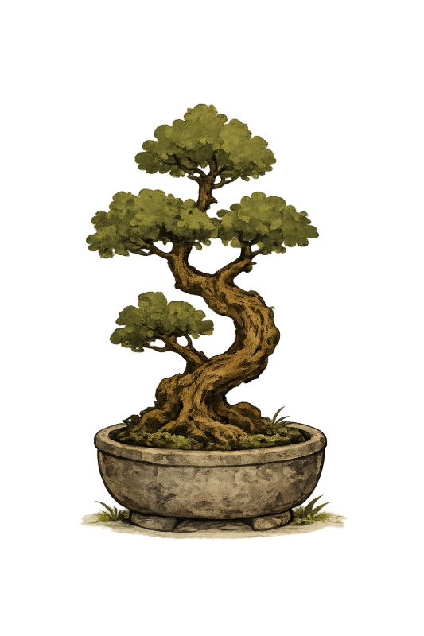

VOICE 01 · ACTIVE
gen z · raw
“yeah this sucks. okay. sit down.”
doesn't sugarcoat. slangy, blunt, occasionally crude. says the quiet part out loud. “meditation of not giving a fuck” lives here.
for: when you've been polite all day

Spill the day to Kokoro like you would to a safe friend. He listens first, then turns what you said into a solution — a short personalized meditation that will make you feel better.
no scripts. no streaks to keep. kokoro asks how you're carrying, listens, and picks the friend whose voice fits tonight.
"i'm tired" works. so does "i don't know". whatever you tell Kokoro stays here. nothing is shared, nothing is scored.
he doesn't lead the meditations himself. he greets you, figures out what you need, then hands you to one of his friends — someone with the right voice for tonight.
three to seven minutes. gen z raw, cosmic, or whisper-to-sleep — different rhythms for different nights. tomorrow yours will sound different, because tomorrow you'll be different.
he's the one who greets you and figures out what you need. then he hands you to whoever fits — they each have their own way of getting through.
“yeah this sucks. okay. sit down.”
doesn't sugarcoat. slangy, blunt, occasionally crude. says the quiet part out loud. “meditation of not giving a fuck” lives here.
“you are very small. that's the good news.”
goes wide. stars, scale, the very small you inside the very big everything. zooms out until your day fits in your hand.
“the day is over. you can put it down.”
whispers you under. slow, low, soft. made for the edge of sleep — a voice you can barely hear, on purpose.
more friends coming · hard mode · iron · zen · 禅 · hold · soft · vision · light
"i won't try to fix you. i'll just listen — and make you something."
"the first app that didn't try to fix me. i told it one thing and it made me a meditation about letting the day be over. i actually cried."
"i don't journal. i don't meditate. but i talk to Kokoro most nights. it's like leaving a note for myself in someone else's handwriting."
"the little monk is unreasonably comforting. but the meditations are the thing. i told him 'i'm carrying everyone' and he handed me to the cosmic friend. i couldn't write that for myself."
free to start. nothing tracked, nothing shared. the beta is open and the app is in review — pick whichever feels right.